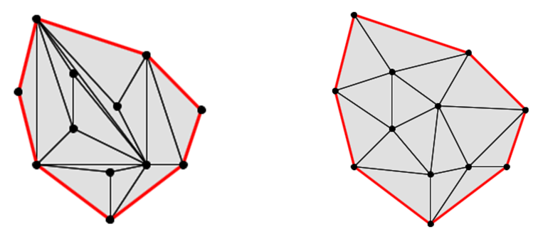
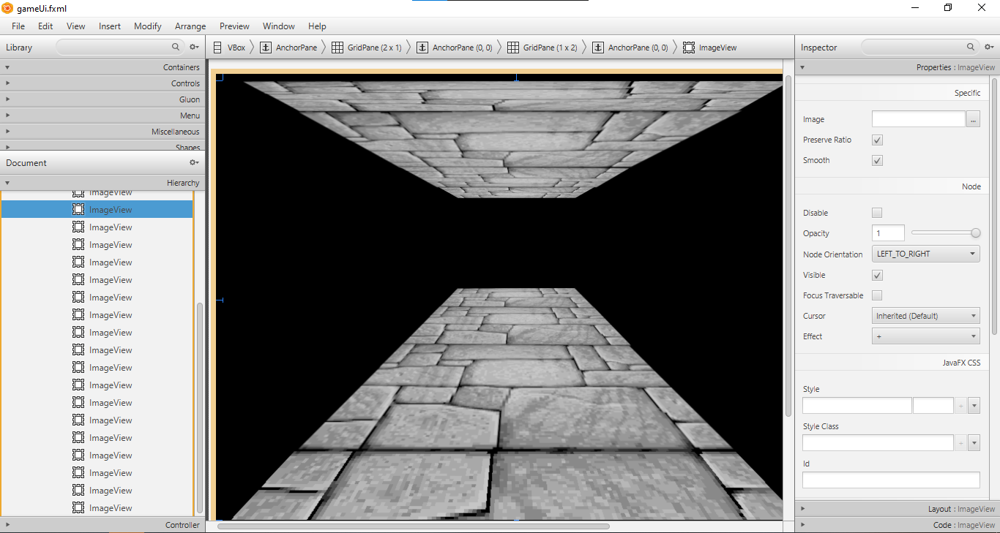

RPG game

A short video showing how the project works
Introduction
Originally, the RPG game was supposed to be a game made in pairs as a college exercise. Unfortunately, due to lack of time, it was renamed as a simulator for exploring procedurally generated dungeons.
My tasks that I was responsible for in the project
- Procedural generated dungeon, consisting of corridors and rooms that the player can move through
- Display the illusion of a 3D image on a 2D dimensional plane using JavaFX
- Responsive minimap
- The main UI pattern that accompanies us as we explore the dungeons
Procedural generated dungeon
In general, the problem boils down to creating a dungeon that has the property that from every room we can reach every other room. Presenting the problem in this way shows us that we are looking for a connected graph, but just creating a clique is not the most interesting solution from the player’s perspective.
I divided the whole process of creating dungeons into 5 stages.
1) Random placement of rooms on the map
To begin with, to make the number of rooms depend on the successive levels of the game, I created a linear function with the given formula:
roomAmount = (int)Math.ceil((3.1*level+2.5));
This function creates for us sequentially 5, 8, 11, … rooms. Next, I had to define the maximum dimensions of our area on which we operate. I found that the appropriate value to keep the dungeons from being too stretched would be the number of rooms * 4. Then all that remains is to randomly place n levels on the k * k board so that they do not interfere with each other. In order to be guaranteed not to draw too often the already occupied points to the list I entered all possible coordinates, used shuffle and then selected the first n.
2)Triangulation Delonay
The next step is to get information about which room should connect via a corridor to another room. With help comes delonay triangulation. Delonay triangulation is an algorithm that triangulates a given point cloud, while trying to make the triangles as equilateral as possible. This is a very useful aspect, since triangulation with another algorithm could return us bifurcated triangles, which are not a very real representation of how dungeons are built.
In the screenshot below, the left shows the result of triangulation using the monotonic polygon triangulation algorithm, while the right shows triangulation using said delonay triangulation.

You can see the difference at first glance
How does the delonay triangulation algorithm work? In a nutshell, we first create a super-triangle that contains all the points, then for each point (in our case, these are the dungeon rooms):
- we add it to our triangulation,
- we check if the delonay triangulation condition is met (the added point must not be contained in any circle described on an already existing triangle),
- if the condition is not met, we remove the 'bad triangles',
- join the added point with the free vertices to form new triangles.
Video about Triangulation Delonay
Having delonay triangulation we already know which dungeons can be connected by corridors, but there are too many corridors and they are too predictable so the potential game can again become too boring and obvious for the user.
3)MST
Wanting to limit too many edges in such a way as to preserve the integrity of the graph, we can use a minimal spanning tree.

By definition, MST is a subset of the edges of an input graph that connect every possible vertex, without any cycle, in addition, it has the smallest sum of all possible STs.
To solve this part of the problem I use Kruskal’s algorithm, it sorts the edges based on their weights, and then adds them sequentially if no cycle is formed in our tree after adding them.
More about Kruskal’s algorithm
If we leave only the MST, the process of going through dungeons will be too boring for a potential player, so I leave 10% of the removed edges, so as to provide more randomness.
4)Building corridors
Having information about which rooms are connected to each other, we also need to know the actual possible construction of such a tunnel on our map created from a rectangular grid. For this task I use the A* algorithm. A* is a modified Djikstra algorithm. The algorithm walks through all the vertices of the graph from the start to the finish, assigning to each father, that is, the vertex in which it was before it. It visits these vertices in order relative to their distance (using a priority queue). The modification that makes A* a Djikstra is that we add the distance (e.g., in Euclidean metric) from the vertex being explored to the finish line to the weight of the vertex, making it head first to the finish line. However, if we used only this approach then in the case where room A and B lead to room C, and rooms A and B are next to each other A* can pull two parallel tunnels, and as we know this is not a human approach to work, because as humans we try to reduce the amount of work for ourselves. Therefore, my algorithm A*, when adding a vertex to the queue, checks if the vertex is already some kind of tunnel, if it is then it adds a random value to reduce its weight (a different one is drawn for each wormhole to make the game more interesting), so that a vertex with a tunnel is weighted over a regular vertex.

For the curious, I refer you to my page on visualizing pathfinding algorithms in graphs.
5)Finalizing the dungeon
We already have practically the whole dungeon, but we are left with the location of the player and the placement of special rooms (e.g., store, boss room). To draw the special rooms, I simply draw two rooms, the first is the store and the second is the boss room. On the other hand, to place the player in the dungeon I take the boss room and then look for the room farthest away from him, at one of the 4 possible exits the program places our player.
And that’s all :)
Visualization of all the steps done in paint

Display the illusion of a 3D image on a 2D dimensional plane using JavaFX
While creating this project, I had to face the problem of displaying 3D graphics on a 2D plane using the tools available in JavaFX. Fortunately, there is such a thing as perspective. I applied the perspective trick using this graphic.

In order to display the graphics well, I prepared myself separately a minimum number of walls, which I apply using JavaFX to create the image. Depending on where the walls are, how the corridors are laid out, I adjust the overlay of the appropriate wall graphics. In scenebuilder everything looks like this, I had to create the right number of imageviews to display the right number of graphics, then for each imageview I select the right graphic.

Responsive minimap
The operation of the minimap itself is very simple, every time the movement button is clicked the program creates the minimap once again based on the knowledge of what type of room (corridor,room,boss,store) is in that particular map cell.